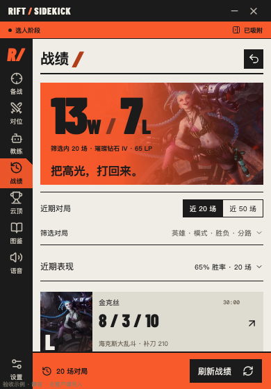
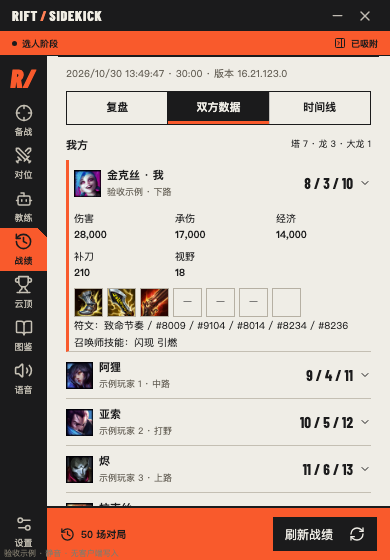
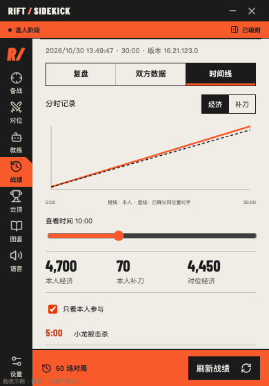
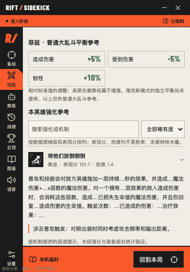
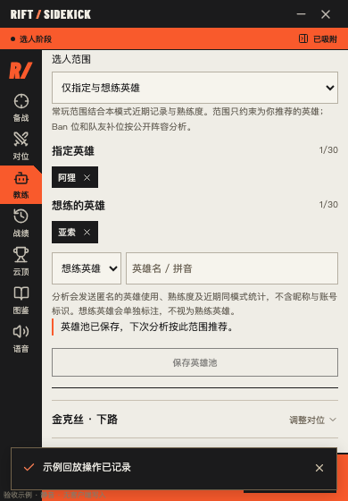
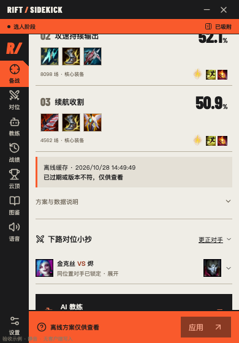
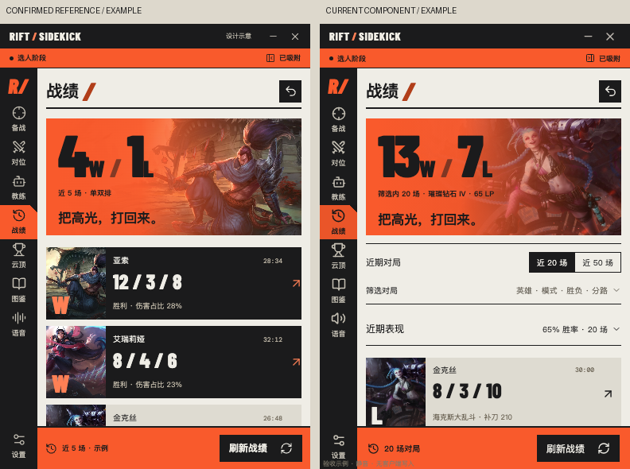
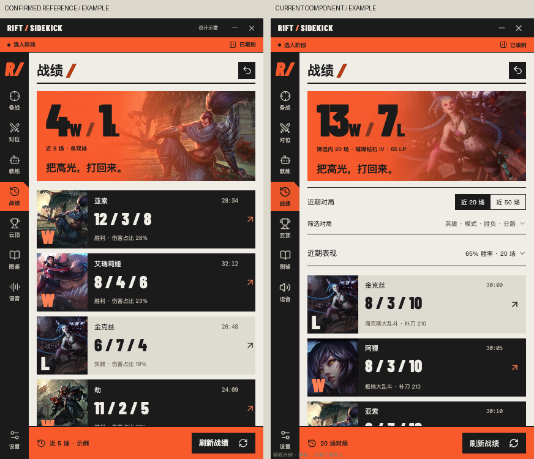
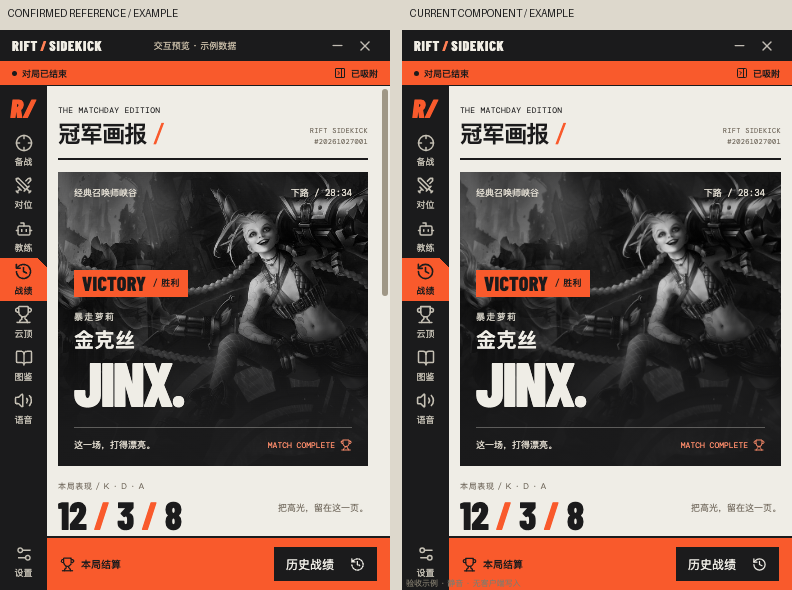
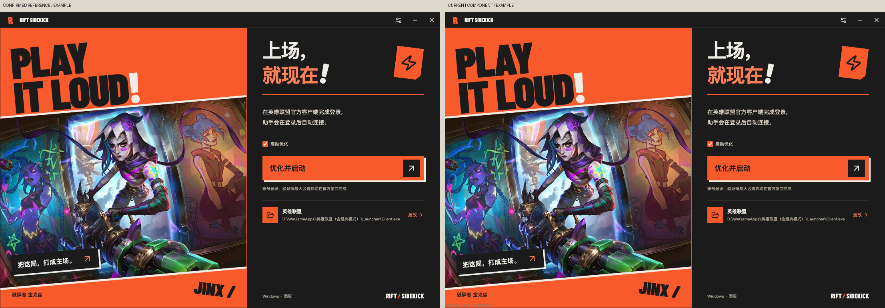

战绩中心、大乱斗资料与推荐增强
2026-10-30 本地源码验收。正式 React 组件、示例战绩桥接、实取菲兹强化快照；声音静音，没有真实客户端写入或外部模型调用。尚未发布安装包。
468 项自动测试通过，8 项特定环境测试跳过 · 类型检查 / 生产构建通过 · 62 项界面检查通过。Windows 国服的真实战绩、时间线与回放启动待实机确认。
战绩与复盘 · 390 小窗



大乱斗、教练英雄池与离线缓存



同尺寸设计对照
左：确认基准 / 示例；右：当前正式组件 / 示例。战绩页添加折叠入口，登录与冠军画报保留原构图。
战绩 · 390×560

战绩 · 430×720

冠军画报 · 390×560

登录 · 1100×740

来源缺少补丁号时如实标注；海克斯表现分与热度不是胜率。截图仅验证界面与本次数据解析，不证明真实对局结果或收益。